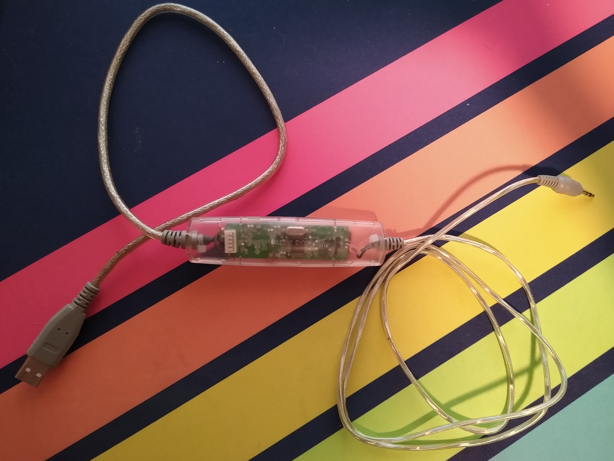

How to Recover a Bricked SilverLink Cable
Actually Troubleshooting the “Unknown Device” and “TUSB3410 Boot Device” Error Message when Using TI Connect™ Software for Windows®.
Table of Contents
1. The Context
(This is a revised version of a post I made on my Tumblr blog, then revised and posted to the Cemetech forum, because here I can do all the editing I want without getting in trouble for bumping.)
This is a TI-GRAPH LINK USB cable, commonly referred to as a “SilverLink”:

to distinguish it from earlier models of communication cable, which were colored black or gray and used the classic PC serial port for their host interface.
For graphing calculators without built-in (“direct”) USB, such as the pre-CE TI-83 Plus, the SilverLink is the best option for getting files onto and off of your calculator.
The SilverLink is a funny device with a funny job. The classic TI 2.5mm TRS link port uses a proprietary hardware communication protocol called “D-Bus”1 (sometimes “DBus”) that’s wholly incompatible with USB. I mean, it’s clockless, for starters. The serial cables models which proceeded it could get away with a few resistors and a bit-banging driver, but USB doesn’t allow that kind of granular pin-level control over hardware.
That’s what the circuit board in the middle is for. In revision B models (the most commonly-produced revision, as far as I can tell) it’s a simple setup based around an off-the-shelf TI microcontroller called the TUSB3410, an I2C EEPROM for storing firmware, and a few support components (oscillator, etc.).
2. The Problem
The TUSB3410 boot process (run on cable insertion, as the SilverLink draws power from the USB rail) always involves checking to see if it’s attached to an I2C EEPROM with firmware code to execute. If it finds one, and its contents are properly formatted, it’ll copy that code into internal RAM and start executing it.
If it can’t find an EEPROM, or if it can but the contents therein aren’t properly formatted, it’ll fall back to looking for boot code over USB. If one day your SilverLink starts showing up to your computer as a “TUSB3410 Boot Device” (VID 0x0451, PID 0x3410) instead of a “TI-GRAPH LINK USB” (VID 0x0451, PID 0xE001), the latter has happened to it. Your cable can’t read its own firmware and assumes it must therefore be a development kit.
You can try to follow TI’s support guide for what to do:
- https://education.ti.com/en/customer-support/knowledge-base/ti-83-84-plus-family/troubleshooting-messages-unexpected-results/27430
- https://education.ti.com/en/customer-support/knowledge-base/ti-83-84-plus-family/troubleshooting-messages-unexpected-results/14060
but their suggestions probably won’t help. Here’s how to actually fix the problem:
3. The Fix
Download the TUSB3x10 EEPROM Burner from here: https://www.ti.com/tool/download/SLLC443/01.00.00.0C.
This is a Windows-only program, but to my knowledge will work on basically any windows machine from XP on – so long as it’s got USB ports. No clue if it’ll work in a VM.
You might want to consult the user’s manual while you’re at it, you can find it here: https://www.ti.com/lit/ug/sllu205/sllu205.pdf.
Download the SilverLink firmware. I re-assembled it from this disassembly: https://github.com/queueRAM/ti_graph_link.
It’s just a standard ’make’ to build. The output file you’re looking for is called
ti_graph_link_silver.eep.- Rename
ti_graph_link_silver.eeptoti_graph_link_silver.bin. - Open the TUSB3x10 EEPROM Burner, click on the options dropdown and click “Show the ‘Program Full Binary Image’ button”. (See page 7 of the manual).
- Select the entry under “Computer” labeled “TUSB3410 EEPROM Burner Instance (1.00)”.
- Set EEPROM size to “64Kb”.
- Set “File Path” to point to
ti_graph_link_silver.bin. (The renamed .eep, not the original .bin) - You do not need to specify the
VID,PID,Manufacturer string,Product stringorSerial #. This information is contained withinti_graph_link_silver.bin. - Likewise, the default page-write buffer size (32 bytes) and I2C bus speed (400 KHz) in the burner app are already correct for this EEPROM, so there’s no need to change them.
- Click the “Program Full Binary Image” button (yellow triangle with the exclamation point), and proceed with the write.
- Unplug and re-plug your cable, and it should show up as a SilverLink again!
4. Further Troubleshooting
4.1. I Don’t See “TUSB3410 EEPROM Burner Instance (1.00)” in the EEPROM Burner
You’ll need to reinstall the TUSB3410 driver. Check page 16 of the manual (https://www.ti.com/lit/ug/sllu205/sllu205.pdf) and follow the steps it describes.
4.2. SilverLink Stops Enumerating
If your SilverLink stops showing up at all after flashing the firmware, this might be because you pressed “Program” instead of “Program Full Binary Image”. Your SilverLink has been tricked into a state where it thinks the EEPROM contains valid code, but that code is all garbage so it’s sorta bricked.
Fortunately, there is a way to get it back into “Boot Device” mode – we only need to either corrupt the EEPROM, or convince the TUSB3410 that the EEPROM is corrupt. I’ve managed to accomplish this, but I’m NOT an electrical engineer – or even all that informed about basic EE concepts – so I’d love some feedback from an actual expert. Leave a comment or open an issue or whatever on my GitHub :)
Here’s the procedure:
- Unplug the SilverLink, if you haven’t already.
- Disassemble the SilverLink (it’s just one T6 torx screw under the sticker and a bunch of plastic snaps) and remove the circuit board.
Grab a jumper wire and short the
Vss(bottom rightmost) andSDA(top rightmost) orSCL(top, one in from rightmost) pins together while at the same time plugging the USB connector into your computer.I recommend referencing the EEPROM datasheet while you do this: https://ww1.microchip.com/downloads/en/DeviceDoc/21189f.pdf
- Repeat step 3 until it enumerates again. If you’re lucky, this should only take a couple tries at most.
Again, I have no idea how reliable or safe this procedure might be – perform at your own risk! All I know is that it worked for me the once.
5. Closing Thoughts
No clue what causes the corruption in the first place, or how long this fix will last. It might be because the EEPROM’s write protect pin is set to “write enable”? It could also just be degrading hardware, for all I know.
All I do know is that, eight months after performing this procedure myself, it’s still working.
It’s very funny to see that a mass-produced product like the SilverLink, niche though it may be, could have a failure mode where it more-or-less just turns back into a development board. That’s the sort of behavior you’d expect from a bespoke arduino-based automatic cat door you bought from a guy who builds them in his garage and sells them for cash under the table, not Texas fucking Instruments.
Who ships consumer products with the default “waiting for firmware” fallback mode still enabled? Furthermore, who ships consumer products with the default “waiting for firmware” fallback mode still enabled, and then doesn’t include the option to re-flash that firmware in any of their products?
Insane.
It does give me some ideas, though. The TUSB3410 is decently well-documented, we have disassembled firmware to work from, and we have a demonstrated procedure to upload arbitrary firmware to a rev. B cable. I wonder what I could do by writing my own?
The TI Keyboard (PLT-KBD), for example. It uses an incompatible modification of the D-Bus hardware protocol to synchronize during the “send key code” routine, ostensibly to allow a calculator to communicate with the keyboard and another calculator at the same time,2 and the default SilverLink firmware has no idea how to interpret them, and simply rejects all of it. Nothing is signaled to the PC besides “an error occurred”.
If we wrote our own firmware, however, all the low-level details are fully exposed and interpretable. There’s no special hardware support we’d need. Just have the cable enumerate as a generic USB keyboard, translate PLT-KBD scancodes into USB scancodes, and Bob’s your uncle! That’d be a neat project. Sometime…
Footnotes:
Not to be confused with the XDG protocol of the same name. See https://debrouxl.github.io/tilp-linkguide/hardware.html for more.
This functionality was never deployed in any actual calculator or keyboard model, as far as I’m aware. IIRC some early models of the PLT-KBD had a blanked-out section of their motherboards for a second daisy-chained I/O port?